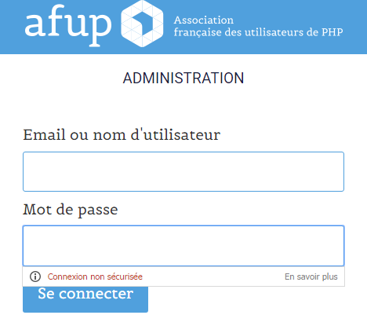
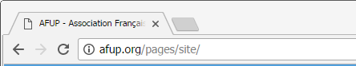
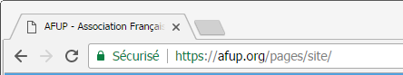
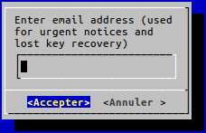
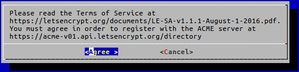

CSR, PKI puis Let's Encrypt
Histoire d'une migration de certificats classiques vers des certificats Let's Encrypt
(+ une PKI maison au passage)
Lyon, le 15/02/2017
Le parcours
- (Présentations)
- (HTTPS et la confiance)
- Pourquoi ?
- Les CAs
- Une PKI
- Let's Encrypt !
Présentations
Moi
Administrateur systèmes et réseauxDéveloppeur PHP 5.4
Vous ?
HTTP+SSL et la confiance
HTTPS = HTTP + SSL/TLS
SSL : Secure Sockets Layer
TLS : Transport Layer Security
(sur-)couches de sécurisation
TLS v1 ≈ SSL v4
Permet l'authentification (réciproque au besoin)
La confidentialité et l'intégrité des données.
TLS en action
- C: initie la connexion TLS
- S: répond avec son certificat
- C: essaie de déchiffrer le certificat et le valide
- C: génère une clé de session et l'envoie (chiffrée)
- S et C chiffreront leur échanges avec cette clé
Pourquoi vouloir de l'HTTPS ?
- Ne pas se restreindre (accès de partout)
- Respecter l'utilisateur
Incitations
Les autres

Sans pitié
Les Autorités de Certification (AC)
Une autorité de certification est un tiers de confiance permettant d'authentifier l'identité des correspondants.
Une autorité de certification délivre des certificats décrivant des identités numériques et met à disposition les moyens de vérifier la validité des certificats qu'elle a fourni.(Source : Wikipédia)
Passez au (cadenas) vert...
-
HTTP:// en clair :
 - DV, Domain Validation (anonyme) :
-
OV, Organization Validation (nommé) :
 -
EV, Extended Validation (nommé, contrôlé) :


...Avec des billets verts
Processus standard
- (Payer)
- Générer une CSR (Certificate Signing Request) :
openssl req -new -out webserver.csr \ -key webserver.key -sha256 - Coller la CSR sur l'interface de l'AC
- (Prouver la propriété du domaine)
-
Récupérer le contenu du certificat
et le coller sur le serveur
Une infra de gestion de clés
Public Key Infrastructure = Les logiciels de l'AC
Libérés
mais toujours occupés
et isolés
Let's Encrypt
- Une AC
- Sortie de beta en avril 2016
- Certificats DV gratuits de 90 jours
- Reconnue par les navigateurs
- Simple d'utilisation grâce à ACME
Automatic Certificate Management Environment
Framework client/serveur
API REST
Prévu pour des domaines
1 compte client = une paire de clés publique/privée
Théorie d'ACME
(demande de certificat)
- Client génère une CSR
- Serveur propose différents challenges
- Client en relève un et informe le serveur
- Serveur vérifie
- Client télécharge certificat
Différentes validations (DV)
-
HTTP (http-01) : Fichier
http://{domain}/.well-known/acme-challenge/{token} -
DNS (dns-01) : Enregistrement
TXT
_acme-challenge.{domain}. 300 IN TXT "{hash-auth-key}" -
TLS + SNI (tls-sni-02) : Certificat auto-signé
SAN 1 ={hash-token}.token.acme.invalid
SAN 2 ={hash-auth-key}.ka.acme.invalid -
Manuelle (oob-01) : À faire à la main
Pour les cas particuliers
Processus idéal
Avec un serveur web compatible ACME :
- Saisie du nom de domaine
- Choix d'une AC
- (Paiement)
Le serveur web génère la clé, la CSR,
contacte l'AC, récupère le certificat,
l'installe et planifie les futures MAJ.
Profit!
On-Demand TLS
Support des challenges HTTP, TLS-SNI et DNS
- Cloudflare
- DigitalOcean
- AWS Route 53, Dyn, Google Cloud DNS
- Gandi, OVH
- RFC2136 (DNS UPDATE)
Autres implémentations notables
amphp/aerys- Mesosphere DCOS
- Des Control Panel
- Des solutions d'auto-hébergement (e-mails, fichiers, etc.)
Les commandes
Installation (Debian)
aptitude install certbot
Demande de certificat (validation par http-01)
certbot certonly --standalone -d "foo.example.com,bar.example.com"
certbot certonly --webroot \
-w /var/lib/letsencrypt/webroot/ \
-d "foo.example.com" \
-d "bar.example.com"
Configs serveur pour webroot
Alias "/.well-known/acme-challenge/" \
"/var/lib/letsencrypt/webroot/.well-known/acme-challenge/"
<Directory "/var/lib/letsencrypt/webroot">
Options None
AllowOverride None
ForceType text/plain
Require all granted
RedirectMatch 404 "^(?!/\.well-known/acme-challenge/[\w-]{43}$)"
</Directory>
location ^~ /.well-known/acme-challenge/ {
allow all;
default_type "text/plain";
root /var/lib/letsencrypt/webroot;
}
location = /.well-known/acme-challenge/ {
return 404;
}
L'AC Let's Encrypt demande deux choses :


Saving debug log to /var/log/letsencrypt/letsencrypt.log
Enter email address (used for urgent renewal and security notices)
(Enter 'c' to cancel):foo@example.com
Starting new HTTPS connection (1): acme-v01.api.letsencrypt.org
----------------------------------------------------------------------
Please read the Terms of Service at
https://letsencrypt.org/documents/LE-SA-v1.1.1-August-1-2016.pdf. You
must agree in order to register with the ACME server at
https://acme-v01.api.letsencrypt.org/directory
----------------------------------------------------------------------
(A)gree/(C)ancel: A
certbot crée clés et certificats dans /etc/letsencrypt/live/foo.example.com/
Validation DNS manuelle
certbot certonly --manual --preferred-challenges dns -d "example.com"
Obtaining a new certificate
Performing the following challenges:
dns-01 challenge for example.com
NOTE: The IP of this machine will be publicly [...]
Are you OK with your IP being logged?
(Y)es/(N)o: Y
Please deploy a DNS TXT record under the name
_acme-challenge.example.com with the following value:
D4pmHUsxThdsyGvcWy0w-BC9tiPk34ZBpqs5EQMf0CSkB
Once this is deployed,
Press Enter to Continue
Waiting for verification...
Cleaning up challenges
Generating key (2048 bits): /etc/letsencrypt/keys/0001_key-certbot.pem
Creating CSR: /etc/letsencrypt/csr/0001_csr-certbot.pem
Validation DNS auto (OVH)
Avec le client Neilpang/acme.sh
export OVH_AK="OVH_application_key"
export OVH_AS="OVH_application_secret"
acme.sh --issue -d foo.example.com --dns dns_ovh
# Ouvrir l'URL d'autorisation d'API OVH et autoriser le client
acme.sh --issue -d foo.example.com --dns dns_ovh
Gère : Alwaysdata, Cloudflare, GoDaddy, AWS Route 53, DigitalOcean, ...
Renouvellement
Renouvellement en une commande :
/usr/bin/certbot renew
# Renew + reload serveur
cmd="/usr/bin/certbot \
renew \
--quiet --no-self-upgrade \
--renew-hook \"/usr/sbin/service nginx reload\""
# Planification entre 2h et 3h
echo "\
$(expr $(od -An -N1 -i /dev/urandom)\%60 | tr -d ' ') 2 * * * \
root $cmd" \
> /etc/cron.d/certbot
Ils soutiennent Let's Encrypt
- Mozilla
- Akamai
- Cisco
- EFF
- OVH
- Chrome
- Gemalto
- Gandi
- Automattic
Conclusion
Pour nous...
- D'abord plus de sécurité
- Puis ouverture à moindre coût
Let's Encrypt c'est ...
- Gratuit
- Simple (fire and forget)
-
Utilisé par beaucoup
(10 millions de certificats en sept. 2016)
(et 10 millions supplémentaires, deux mois plus tard)
- ...nous rapproche tous d'un web 100% chiffré
Questions ?
Merci
à vous, et à l'AFUP Lyon
Pour poursuivre la découverte et vos questions ultérieures :